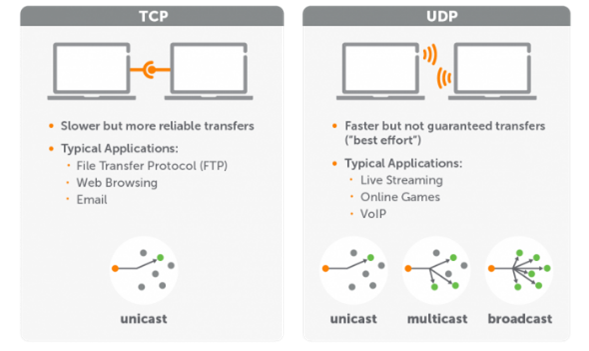
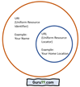
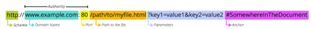
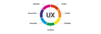
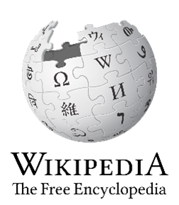
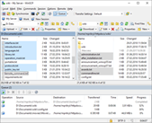
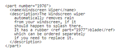
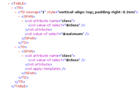

Below will be a bunch of computer terms definitions and images that are sourced. A table then presents the data.
| Web Definitions | ||
|---|---|---|
| Name | Definition | Image |
| UDP | User Datagram Protocol is a communications protocol that is primarily used for establishing low-latency and loss-tolerating connections between applications on the internet. It speeds up transmissions by enabling the transfer of data before an agreement is provided by the receiving party. https://www.techtarget.com/searchnetworking/definition/UDP-User-Datagram-Protocol |  |
| URI | A Uniform Resource Identifier is a generic term for the names of all resources connected to the World Wide Web. They enable the protocols over the internet to conduct the interactions between and among resources. https://www.hypr.com/uniform-resource-identifier-uri |  |
| URL | A Uniform Resource Locator is the address for a unique resource on the web like a website, HTML page, image, CSS document. It is the location on a web server for the data a user requests and can be accessed from. https://developer.mozilla.org/en-US/docs/Learn/Common_questions/What_is_a_URL |  |
| UX | User Experience is the process design teams use to create products that provide meaningful and relevant experiences to users. It involves design of the client-facing pages and interfaces by considering accessibility, aesthetics, function and branding to increase enjoyment to the user. https://www.interaction-design.org/literature/topics/ux-design |  |
| Web Accessibility | Web Accessibility refers to the inclusiveness of the way a website is coded and designed to provide a good experience, not just for able people, but disabled as well – so that it can be useful to as many people as possible. It can involve support for those with auditory, cognitive, visual, speech impairments. https://www.w3.org/WAI/fundamentals/accessibility-intro | |
| Wiki | A Wiki is a digital text publication website that is collaboratively edited by its own audience using a web browser. Many are open publicly and can be edited to improve the content’s accuracy and scope. A Wiki generally consists of one entire topic or genre. https://en.wikipedia.org/wiki/Wiki |  |
| W3C | The World Wide Web Consortium is an international community where its participants lead the web to its full potential. They develop protocols and guidelines that ensure long-term growth for the Web. https://www.w3.org/Consortium | |
| WinSCP | Windows Secure Copy is a free and open-source SSH (Secure Shell) File Transfer Protocol. Its main function is secure file transfer between a local computer and a remote server. It also offers basic file manager and file synchronisation functionality. https://en.wikipedia.org/wiki/WinSCP |  |
| XML | Extensible Markup Language is a simple text-based format for representing structured information: documents, data, configuration, books, transactions, invoices, and much more. It is one of the most widely used formats for sharing structured information today. https://www.w3.org/standards/xml/core |  |
| XSL | Extensible Stylesheet Language is a styling format for XML. It is intended for complex formatting where the contents of the document might be displayed in multiple places. https://www.w3schools.com/xml/xsl_intro.asp |  |